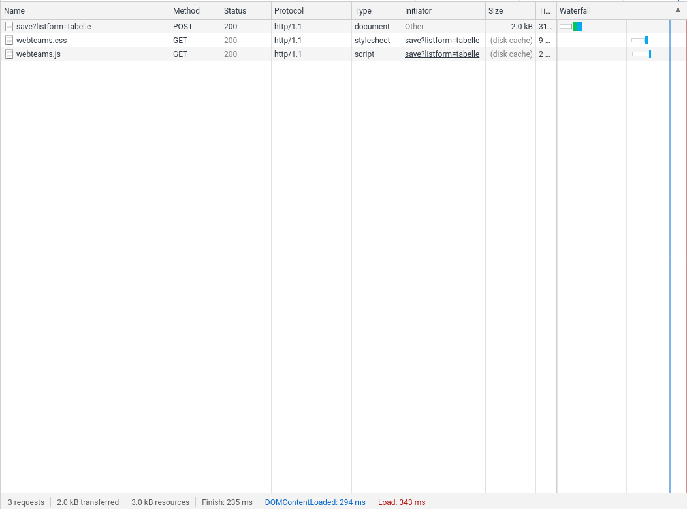

DOCUMENTATION
Aufbau der Webanwendung
├── app
│ ├── __init__.py
│ ├── application.py
│ ├── database.py
│ ├── dataid.py
│ └── view.py
├── content
│ ├── webteams.css
│ └── webteams.js
├── data
│ ├── maxid.json
│ └── webteams.json
├── server.py
└── templates
├── form.tpl
├── list.tpl
└── list2.tplIm Ordner app befinden sich alle für den Server interessanten Python-Skripte. Die Datei "init.py" sorgt dafür, dass der Ordner als Modul erkannt wird.
application.py ist der Entrypoint für cherryPy. Die Routen der Webanwendung stehen hier als Funktionen zu verfügung. Eine als Route definierte Funktion wird mit dem @Cherrypy.expose Decorator versehen. Liefert HTML-Code der im Browser angezeigt wird.
database.py stellt ein Interface bereit um Daten zu speichern, hier Python Dictionnaries. Abgespeichert werden die Daten im JSON Format im data-Ordner.
dataid.py speichert den höchsten Index, und stellt sicher das ein Index auf nur einen Datensatz verweist.
view.py generiert den HTML-Code aus den Templates, welche sich im template-Ordner befinden. So kann der HTML dynamisch verändert werden.
Im Ordner content befinden sich die Javascript- und CSS-Datei.
Der Ordner data hält die gespeicherten Daten. database.py speichert die JSON Dateien an dieser Stelle. Die Datei server.py ist der Haupteinstiegspunkt für den Server ( die Stelle wo der Server gestartet wird).
| HTTP-Method | URL | Server-Response |
|---|---|---|
| GET | localhost:8080 | html |
| GET | localhost:8080/add | HTML |
| POST | localhost:8080/save | HTML |
| GET | localhost:8080/delete/ | HTML |
| GET | localhost:8080/edit | HTML |
Vom Browser gehen 3 Anfragen an den Server. Diese "Requests" sind vom Typ GET. Geliefert wird HTML Code in welchen dann die CSS und .js Datei eingebunden werden.
Standartdaten sind im Screenshot zu sehen, die Methode ist vom Typ GET.
 Vom Browser gehen erneut 3 Anfragen an den Server. Diesmal, aufgrund der Form im HTML Code vom TYP POST. save?listenform=tabelle ergibt als Antwort HTML-Code.
Da der Request vom Typ POST ist ( durch das Formular im template) werden hier auch Daten übertragen. Diese werden als Wertepaare zum Server geschickt.